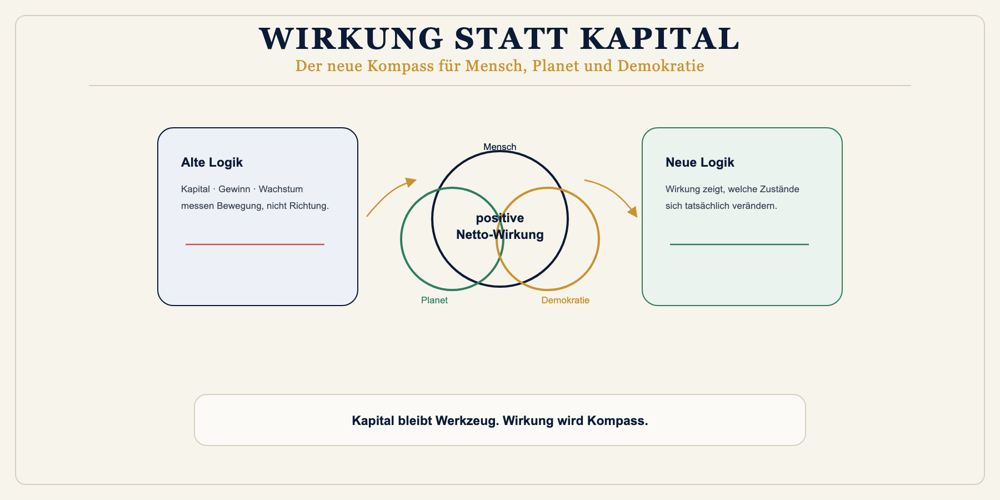
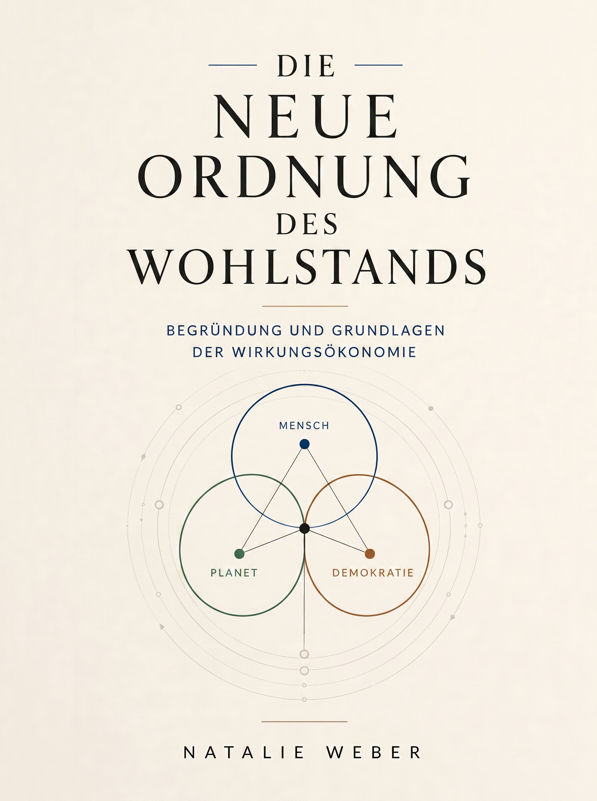
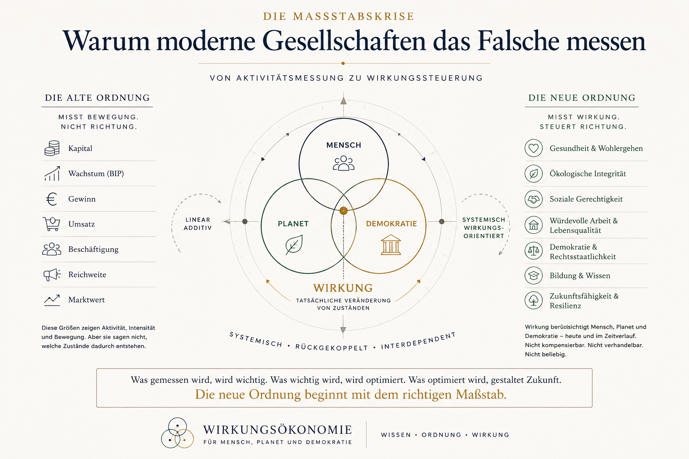

01 · Das Problem
Wir messen Aktivität, nicht Richtung.
Gewinn, Wachstum und Reichweite zeigen Bewegung. Sie zeigen nicht, ob etwas Zukunft zerstört oder schützt.
Leitartikel Maßstabskrise lesen Wirkungsökonomie
Wirkungsökonomie
Wirkung statt Kapital
Geld sagt nichts darüber aus, ob etwas unsere Zukunft zerstört oder schützt. Die Wirkungsökonomie macht Wirkung zur zentralen Steuerungsgröße: für Wohlstand, der Mensch, Planet und Demokratie stärkt.
Die Wirkungsökonomie wurde von Natalie Weber begründet. Sie ist ein eigenständiges Gesellschafts- und Wirtschaftsmodell, das Wirkung auf Mensch, Planet und Demokratie zur zentralen Steuerungsgröße macht.

In 5 Minuten verstehen
Fünf kurze Schritte zeigen, welches Problem die Wirkungsökonomie löst, wie das Modell funktioniert und wo du praktisch weitergehen kannst.
01 · Das Problem
Gewinn, Wachstum und Reichweite zeigen Bewegung. Sie zeigen nicht, ob etwas Zukunft zerstört oder schützt.
Leitartikel Maßstabskrise lesen02 · Die Idee
Kapital bleibt Werkzeug. Der Kompass wird die Wirkung auf Mensch, Planet und Demokratie.
Zum Modell03 · Die Methode
Daten werden bewertet, in Wirkungsklassen übersetzt und in Preise, Steuern und Entscheidungen zurückgekoppelt.
Instrumente verstehen04 · Ein Beispiel
Apfel, T-Shirt oder Laptop: Die Demo zeigt, wie Score, Wirkungssteuer und Preis zusammenhängen.
Produktwirkung erleben05 · Vertiefung
Das Grundlagenwerk, Begriffe und Arbeitspapiere bündeln die Theorie, Methodik und Anwendung.
Grundlagenwerk öffnenIch bin ...
Die Wirkungsökonomie lässt sich aus Alltag, Unternehmen, Politik, Medien, Bildung oder Kapitalmarkt lesen. Wähle den Einstieg, der zu deiner Frage passt.
Bürger:in
Du siehst, wie Produkte, Medien und politische Entscheidungen deine Zukunftsfähigkeit berühren.
Praktisch einsteigenUnternehmer:in
Du erkennst, wie CSRD-Daten, Scorecards und Szenarien zu besseren Entscheidungen werden.
Unternehmenspfad öffnenPolitik / Verwaltung
Du findest Wege von WStG, Wirkungshaushalt und Wirkungsrat zu konkreten Anwendungen.
Politische Anwendungen ansehenJournalist:in / Creator:in
Du siehst, wie Sprache, Reichweite und Plattformlogik Vertrauen, Polarisierung und Demokratie beeinflussen.
Medienwirkung testenWissenschaft / Bildung
Du findest Grundlagen, Glossar und Akademie-Struktur für Lehre, Forschung und Weiterbildung.
Lernpfad öffnenInvestor:in / Finanzmarkt
Du erkennst, warum Wirkung zu Finanzierungsrisiko, Kapitalallokation und Transformationsrendite wird.
Finanzlogik verstehenDie Meta-These
Eine zukunftsfähige Gesellschaft kann nicht länger primär nach Kapital steuern. Wohlstand entsteht dort, wo Handlungen, Produkte, Institutionen, Technologien, Medien, Kapitalflüsse und politische Entscheidungen Mensch, Planet und Demokratie stabilisieren, regenerieren und weiterentwickeln.
Vor dem Hintergrund geopolitischer Instabilität, Energie- und Ressourcenstress, Klimarisiken und fragiler Lieferketten wird diese Logik praktisch: Nachhaltigkeit ist kein Zusatzprogramm, sondern ein Nebenprodukt resilienter, wirkungsorientierter Steuerung. Wer Wirkung versteht, erkennt Risiken früher und kann Wertschöpfung stabiler aufbauen.
Diagnose
Wir messen Gewinn, Wachstum, Umsatz, Marktwert, Beschäftigung, Reichweite und Produktivität. Aber diese Zahlen zeigen vor allem Aktivität. Sie zeigen nicht, ob eine Handlung Lebensgrundlagen stärkt, Menschen entlastet oder Demokratie schützt.
Kapital war lange ein nützliches Werkzeug. Zum Problem wird es dort, wo es selbst zum Ziel wird. Dann gilt als erfolgreich, was Rendite erzeugt - auch wenn die Folgekosten bei Gesellschaft, Natur oder kommenden Generationen landen.
01
Es zeigt, wo Geld gebunden, bewegt und vermehrt wird.
02
Es erfasst Zunahme, aber nicht die Qualität der Folgen.
03
Sie fragt, welche Zustände entstehen und ob sie Zukunft tragen.
Neuer Kompass
Die Wirkungsökonomie fragt nicht zuerst, was sich rechnet. Sie fragt, welche Zustandsveränderung entsteht. Was wird gestärkt? Was wird geschwächt? Welche Kosten werden ausgelagert? Welche Folgen müssen in Preise, Steuern, Kapitalflüsse und Entscheidungen zurückwirken?
Mensch
Würde, Gesundheit, Bildung, Care, Sicherheit, Teilhabe und faire Arbeit.
Planet
Klima, Ressourcen, Biodiversität, Wasser, Boden, Energie und Regeneration.
Demokratie
Vertrauen, Rechtsstaat, Wahrheit, Medienqualität, Teilhabe und gesellschaftlicher Zusammenhalt.
Steuerung
Viele Systeme messen Nachhaltigkeit, ohne daraus Konsequenzen für Preise, Steuern oder Kapital zu ziehen. Die Wirkungsökonomie schließt diese Lücke. Wirkung wird sichtbar, bewertet und in das System zurückgekoppelt.
Daten
CSRD, ESRS, GRI, SDGs und digitale Produktpässe liefern bereits viele der nötigen Informationen.
Bewertung
WÖk-IDs, Scorecards, Benchmarks und Archetypen übersetzen Daten in nachvollziehbare Wirkungsklassen.
Rückkopplung
Wirkung verändert Preise, Steuern, Kapitalzugang, Förderung, Nachfrage und öffentliche Anerkennung.
Lernen
Wirkungsrat, offene Daten und regelmäßige Evaluation machen das System lernfähig.
Das Buch
Die neue Ordnung des Wohlstands begründet die Wirkungsökonomie als eigenständiges Ordnungsmodell. Das Grundlagenwerk ist frei zugänglich und bildet die theoretische Grundlage dieser Website.

Kostenloses Grundlagenwerk
Begründung und Grundlagen der Wirkungsökonomie.
Abgrenzung
Kein ESG-Label
ESG beschreibt Risiken und Berichte. Die Wirkungsökonomie verändert die Steuerungslogik selbst.
Keine Nachhaltigkeitsstrategie
Nachhaltigkeit bleibt oft Zusatz. Die Wirkungsökonomie macht Wirkung zum Maßstab des Systems.
Keine Degrowth-Formel
Es geht nicht um pauschal weniger Wirtschaft, sondern um bessere Wirkung innerhalb planetarer und demokratischer Grenzen.
Keine Utopie
Die Datenbasis existiert bereits. Neu ist die Rückkopplung in Preise, Steuern, Kapital und Entscheidungen.
Anwendungen
Die Wirkungsökonomie verändert die Logik von Produkten, Preisen, Steuern, Unternehmen, Kapital, Wohnen, Arbeit, Medien, KI, Bildung und Lieferketten.
Schädliche Produkte werden teurer, positive Produkte günstiger. Der Preis wird zum ehrlicheren Signal.
Geschäftsmodelle, Lieferketten, Produkte und Governance werden als Wirkungssystem gelesen.
Steuern werden vom Einnahmeinstrument zum Rückkopplungsinstrument.
Wohnraum wird nach Bezahlbarkeit, Energie, Gesundheit, Quartierswirkung und sozialer Stabilität bewertet.
Leistung wird nicht nur am Einkommen gemessen, sondern an Wirkung.
Öffentlichkeit wird als Wirkungsraum verstanden: Wahrheit, Vertrauen und Diskursqualität werden systemrelevant.
Blog
Im Blog werden politische, wirtschaftliche und gesellschaftliche Entwicklungen nach ihrer Wirkung gelesen: Was stabilisiert Mensch, Planet und Demokratie - und was zerstört ihre Grundlagen?

Die Krise unserer Zeit ist nicht nur eine Klima-, Sozial- oder Demokratiekrise. Sie ist eine Maßstabskrise.
Beitrag öffnenWirkung, Scorecards, T-SROI und Wirkungssteuer Schritt für Schritt verstehen.
Akademie startenAkademie
Die Akademie ist der Lernbereich der Wirkungsökonomie - vom Einstieg in den Wirkungsbegriff bis zu Scorecards, T-SROI, Wirkungssteuer und Wirkungskompetenz.
Mitmachen
Wenn Kapital nicht mehr der Kompass ist, muss Wirkung sichtbar, messbar und steuerbar werden.